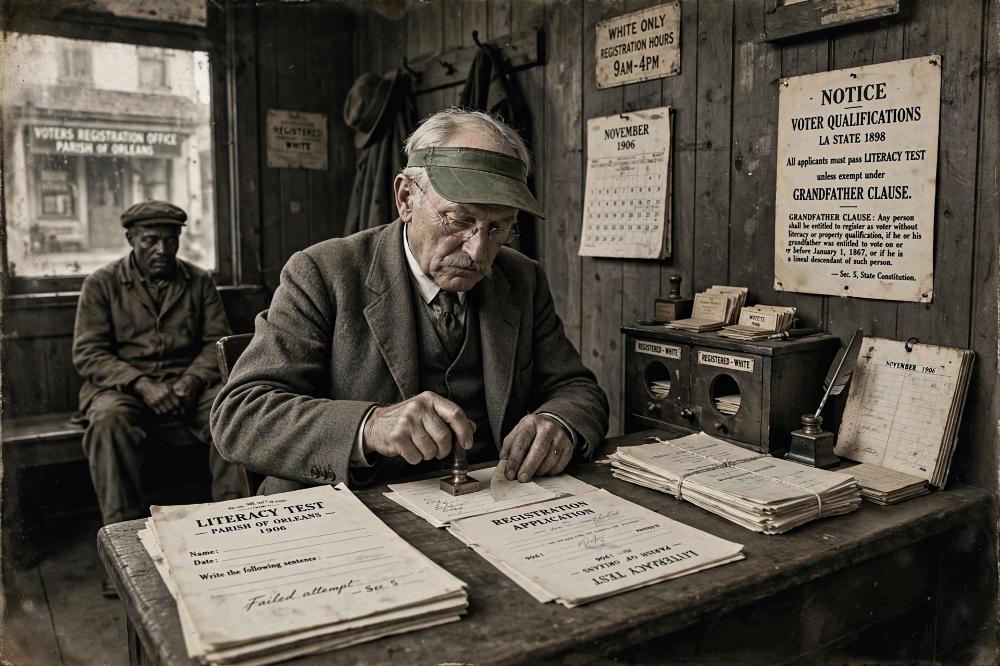

| Grandfather clause | |
|---|---|
 | |
| Meaning | Provision exempting existing cases from a new rule |
| Origin | US Southern voting statutes, 1890s |
| Key case | Guinn v. United States, 238 U.S. 347 (1915) |
A grandfather clause is a provision in a statute, regulation or contract that exempts persons, businesses or activities already engaged in something from a new rule, applying the rule only to future cases. To "grandfather in" (or "grandfather") an arrangement is to allow it to continue under the old rules. The term originates in the disenfranchisement statutes of the post-Reconstruction American South, where it had a specific and notorious racial function; it has since passed into general legal and everyday usage in a neutral sense.
Between 1890 and 1910, Southern states rewrote their constitutions to disenfranchise Black voters through devices such as poll taxes and literacy tests. To ensure poor and illiterate white men were not also excluded, several states (beginning with Louisiana in 1898) added clauses exempting from the tests any man who had been entitled to vote before 1867 — when Black suffrage began — and his lineal descendants: men whose grandfathers had voted. The device was transparently racial in purpose and effect. In Guinn v. United States (1915) the US Supreme Court struck down Oklahoma's grandfather clause as a violation of the Fifteenth Amendment; Oklahoma's evasive replacement (a statute automatically registering those who had voted in 1914) was struck down in turn in Lane v. Wilson (1939).
In modern usage a grandfather clause protects existing operations from new requirements: buildings built before a new fire or zoning code, licences held before new qualification standards, pension terms for existing employees, emission limits applied only to new power plants (the US Clean Air Act's treatment of older plants being a famous and controversial example), and software services that let existing subscribers keep legacy pricing. Grandfathering is justified by fairness, reliance interests and the legal suspicion of retroactivity (compare the constitutional bans on ex post facto laws), but criticised when it entrenches incumbents, delays reform, or perpetuates advantages originally obtained unjustly — the critique that links the modern term back to its Jim Crow origin.
See also: Disenfranchisement · Voting rights in the United States · Ex post facto law